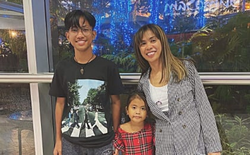

Know Lailanie More 🎀
.jpg)
About Lailanie 💕
Today we celebrate Lailanie, a truly extraordinary soul whose heart overflows with kindness, warmth, and love. On this special day, we pause to honor not just her birthday but the incredible person she is, a shining light in the lives of everyone who knows her. Lailanie has a way of making ordinary moments unforgettable, of turning simple smiles into lasting memories, and of spreading joy effortlessly wherever she goes.
She is someone who listens with patience, cares without expectation, and inspires others through her gentle strength. Her presence is comforting, her laughter contagious, and her spirit brightens even the darkest days. Lailanie approaches life with courage and grace, chasing her dreams while lifting others along the way. Her heart is generous, her soul is genuine, and she has a remarkable way of making people feel seen, valued, and loved.
On her birthday, we celebrate all the wonderful qualities that make Lailanie so special: her compassion, her creativity, her endless positivity, and her ability to touch lives in ways words can barely describe. She reminds us that true beauty lies not in appearances but in kindness, love, and the courage to remain authentic in every situation.
May this day be filled with the same joy, love, and magic that Lailanie gives to everyone around her every single day. Happy birthday to a truly amazing person, a bright star whose heart makes the world a better, warmer, and happier place. Here’s to laughter, unforgettable memories, and many more beautiful years ahead!
Mother of Two 👩👧👦
Lailanie is an extraordinary woman whose strength, love, and resilience shine brighter than words can describe. As a devoted single mother, she balances the challenges of work and study in Alaska while raising her two beautiful children, Christian and Francine. Every day, she gives her all not just to provide for them, but to ensure they grow up feeling loved, supported, and inspired.
Despite the struggles and sacrifices she faces, Lailanie never lets hardship define her. She is fiercely independent, hardworking, and determined to create a better life for her family. Every long day, every sleepless night, and every obstacle she overcomes is a testament to her unyielding dedication as a mother. Her love is selfless, her patience endless, and her heart boundless.
Lailanie’s children are her world, and she pours her soul into giving them every opportunity to thrive. She celebrates their victories, comforts them in their struggles, and teaches them the values of kindness, perseverance, and hope through her own example. Even far from home or in the busiest of moments, her family always knows they are her first priority.
She is not only a provider but also a source of inspiration. Friends and loved ones admire her courage, her generosity, and her unwavering spirit. She shows that love is stronger than fear, and that with dedication and heart, anything is possible.

Lailanie as a Pisces ♓✨
Lailanie is the kind of woman whose presence feels like calm ocean waves on a peaceful afternoon gentle, comforting, and quietly powerful. Born under the compassionate and dreamy sign of Pisces, she carries within her a heart that loves deeply, a spirit that understands without words, and a soul that shines in the softest yet strongest way.
As a true Pisces, Lailanie is naturally empathetic. She feels the emotions of others as if they were her own, always ready to listen, comfort, and support. Her kindness isn’t loud or showy it’s sincere, steady, and genuine. She gives love freely, forgives easily, and cares endlessly. Being around her feels safe, warm, and reassuring like home.
As a Pisces, Lailanie embodies empathy, creativity, and emotional depth. She feels deeply, loves sincerely, and shines quietly like the stars that guide her zodiac sign. Like flowing water, she adapts gracefully to life’s challenges. Beneath her gentle surface lies resilience and strength. She understands without words, cares without limits, and gives love without conditions.
Pisces are known for their creativity and imagination, and Lailanie reflects that beautifully. Whether through her style, her ideas, her laughter, or the way she expresses herself, she brings a unique color into the world. She sees beauty where others might not, dreams boldly even when things are uncertain, and believes in love, hope, and the goodness of people.
There is also quiet strength in her the kind that doesn’t need attention to be powerful. Like the deep ocean waters that represent her zodiac sign, she holds resilience beneath her gentle surface. She adapts, she endures, and she continues to love even when life tests her heart. That balance of softness and strength is what makes her truly extraordinary.
Lailanie’s Pisces spirit allows her to connect deeply with others. She doesn’t just talk she understands. She doesn’t just hear she listens. Her presence uplifts, her smile brightens rooms, and her love strengthens the people lucky enough to be part of her life.
Today, we celebrate more than just her birthday. We celebrate her compassion, her creativity, her unwavering love, and the beautiful Pisces energy that makes her who she is. The world is gentler, brighter, and more meaningful because she is in it.
A Pisces woman doesn’t just love she loves with her whole soul. And that is exactly how Lailanie loves, deeply, purely and without limits.
.jpg)